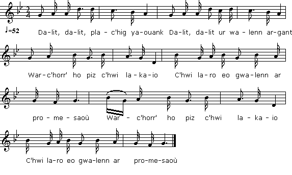

|
AL LAEZ 1. Dalit, dalit, plac'hig yaouank Dalit, dalit ur walenn argant War-c'horr' ho piz c'hwi lakaio C'hwi laro eo gwalenn ar promesaoù War-c'horr' ho piz c'hwi lakaio C'hwi laro eo gwalenn ar promesaoù 2. O nann ! o nann ! me na zime'in ket O nann ! o nann ! war ma biz me ne lakain ket Nemet ur walenn digant Doue Honnezh va c'honduio noz ha deiz Nemet ur walenn digant Doue Honnezh va c'honduio noz ha deiz 3. Monet d'ar gouant da leanez Monet d'ar gouant da Sant Fransez Monet d'ar gouant da leanez Leskel traoù ar bed toud a gostez Monet d'ar gouant da Sant Fransez Leskel traoù ar bed toud a gostez |
VERSION "BARZHAZ BREIZH" 5. - Dalit, dalit, va dousig koant; Dalit va gwalennig arc'hant! Lakit-hi war ho torn breman, Pe m'he lakai deoc'h va-unan! 6. - Biken gwalenn na gemerin Na biken d'am biz na lakin, Nemed gwalenn diouzh dorn Doue, Pehini e-deuz bet va feizh. 2. D'ar govant eo red din moned, Lec'h on gant Doue gortozet. 4. Kemeret am-eus da bried An Hini 'neus krouet ar bed. |
LA RELIGIEUSE 1. Tenez, jeune fille, tenez Cet anneau d'argent, s'il vous plait. Quand vous le porterez au doigt, Dites qu'il engage votre foi. Quand vous le porterez au doigt, Dites qu'il engage votre foi. 2. Non, je ne me marierai pas. On ne verra pas à mon doigt D'autre anneau que celui de Dieu, Nuit et jour mon guide: c'est là mon vu. D'autre anneau que celui de Dieu, Nuit et jour mon guide: c'est là mon vu. 3. Je veux être nonne au couvent L'ordre de Saint François m'attend. Je veux être nonne au couvent Et quitter ce monde si décevant. L'ordre de Saint François m'attend. Je quitte ce monde si décevant. Traduction: Christian Souchon (c) 2011 |
|
1. Take, take, young girl, O take that ring! Take that silver ring that I bring, Put it on your finger. Withal Call it a ring of betrothal Put it on your finger. Withal Call it a ring of betrothal |
O no! O no! I won't marry Or put on my finger any Ring but such as proclaim me bride Of God, by night and day my guide. None but such as proclaim me bride Of God, by night and day my guide. |
I'll be a nun in a nunnery In Saint Francis monastery. I'll be a nun in a nunnery, Leave behind all mundane fancies. In a convent of Saint Francis Leave behind all mundane fancies. Translated by Christian Souchon (c) 2011 |